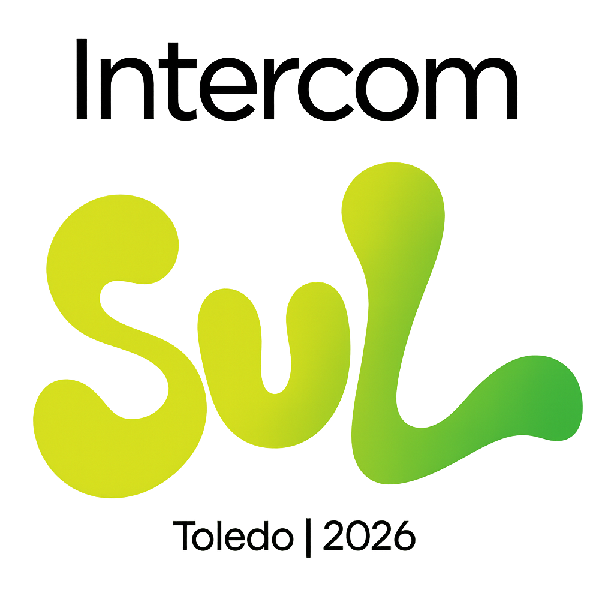

FRONTEIRAS DE PAPEL
🏆 1º Lugar — Intercom Sul 2026
Produção Transdisciplinar • PT05 – Fotografia Artística


Um pedaço de algodão tensionado é a única estrutura que separa o voo da queda livre. O chão avermelhado demarca onde o direito à cidade esbarra no tijolo cru; no ar, ícones de papel tentam driblar o peso de quem nasce nas bordas do mapa.
Mesmo longe da Venezuela, o garoto reconhece o icônico personagem Chaves, popular em toda a América Latina, e encontra em Londrina um fragmento de pertencimento. Sem perceber, há ironia no desenho infantil: criado a partir de uma infância marcada pela escassez, ele ecoa, no ar, a própria causa que o fez deixar seu lar.
A linha repuxa. Entre o lugar de origem e o território que o acolhe, o gesto de brincar redesenha limites invisíveis. Onde o homem impõe o limite do passo, de quem é o vento que ousa cruzar a fronteira?